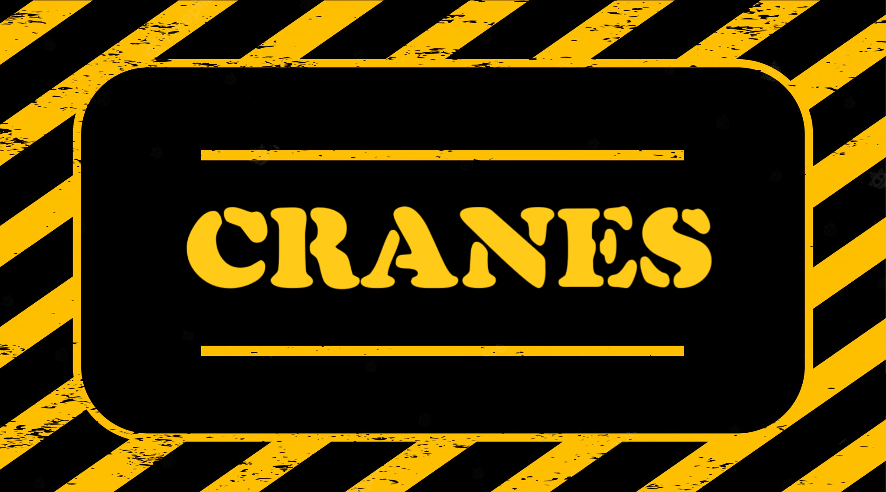
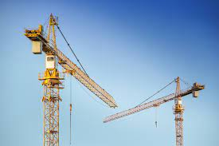
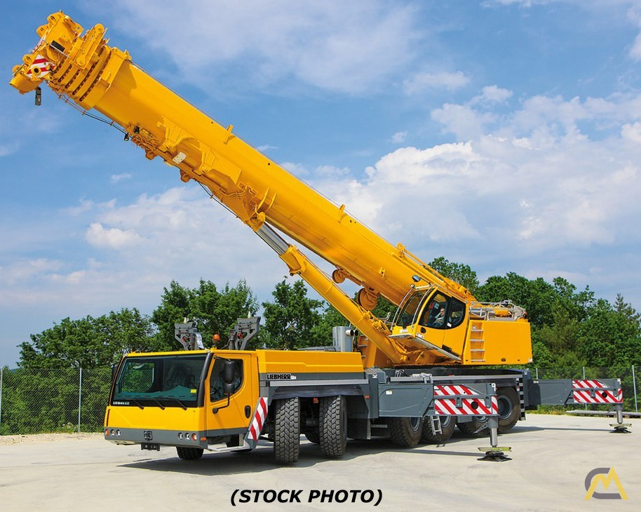

Tower cranes are a modern form of balance crane that consist of the same basic parts. Fixed to
the ground on a concrete slab (and sometimes attached to the sides of structures), tower cranes
often give the best combination of height and lifting capacity and are used in the construction
of tall buildings. The base is then attached to the mast which gives the crane its height.
Further, the mast is attached to the slewing unit (gear and motor) that allows the crane to
rotate. On top of the slewing unit there are three main parts which are: the long horizontal
jib (working arm), shorter counter-jib, and the operator's cab.

The most basic truck-mounted crane configuration is a "boom truck" or "lorry loader", which
features a rear-mounted rotating telescopic-boom crane mounted on a commercial truck chassis.
Truck cranes range in lifting capacity from about 14.5 short tons (12.9 long tons; 13.2 t) to
about 2,240 short tons (2,000 long tons; 2,032 t).[46][47] Although most only rotate about 180
degrees, the more expensive truck mounted cranes can turn a full 360 degrees.